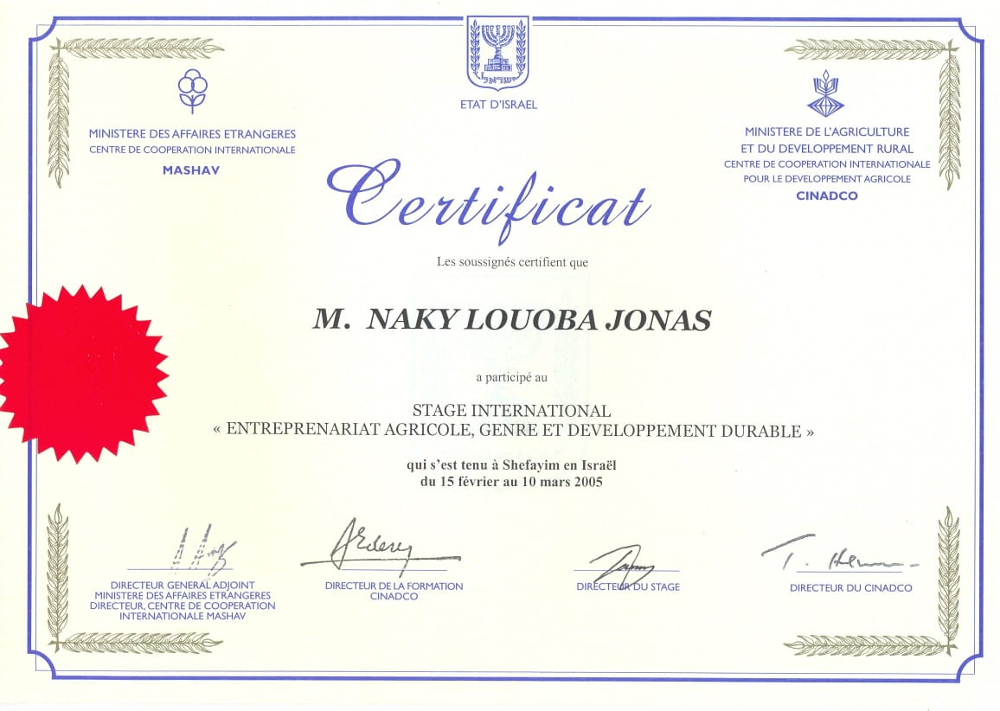
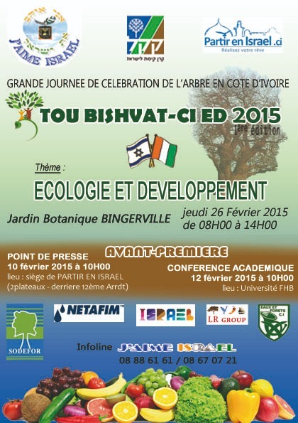

Mission Panafricaine
SOLIDARITÉ
& COOPÉRATION
L'Afrique citoyenne aux côtés d'Israël
~100 participants. 30+ nations représentées. 7 jours de solidarité, de dialogue et de coopération.
11 – 17 Mai 2026 · Jérusalem – Tel-Aviv · Mission panafricaine de solidarité et de coopération avec Israël. Une centaine de participants issus de plus de 30 nations africaines, unis par la conviction que la solidarité est le socle de toute paix durable.
AFRIC4ISRAEL 2026 naît d'une conviction profonde : la solidarité entre les peuples n'est pas un luxe, c'est une nécessité. L'Afrique, qui a connu l'esclavage, la colonisation et les conflits, possède une mémoire collective qui la rend naturellement sensible à la souffrance des autres peuples. Cette empathie n'est pas une faiblesse — c'est une force morale considérable.
Quand Israël traverse l'une des périodes les plus difficiles de son histoire, l'Afrique citoyenne ne peut pas rester silencieuse. AFRIC4ISRAEL 2026 est la traduction concrète de cette conviction : une centaine d'Africains issus de plus de 30 nations se rendront en Israël pour porter un message de fraternité, de solidarité et d'espoir.
1. Exprimer la solidarité africaine — Manifester publiquement le soutien de la société civile africaine au peuple israélien à travers des rencontres, des cérémonies et la Déclaration de Jérusalem.
2. Renforcer le dialogue diplomatique — Établir des canaux de communication directs entre les acteurs de la société civile africaine et les institutions israéliennes.
3. Catalyser la coopération économique — Organiser le Forum Économique Afrique-Israël pour transformer la solidarité en partenariats opérationnels.
4. Adopter la Déclaration de Jérusalem — Rédiger et signer un document fondateur qui engage moralement les participants et pose les bases d'une coopération durable.
Le moment culminant de la mission sera l'adoption de la Déclaration de Jérusalem — un texte fondateur dans lequel les participants s'engagent collectivement à promouvoir la solidarité, le dialogue et la coopération entre l'Afrique et Israël. Ce document sera transmis aux gouvernements africains, aux institutions internationales et aux médias.
La Déclaration de Jérusalem n'est pas une simple déclaration d'intention. C'est un engagement moral qui lie les signataires et qui servira de feuille de route pour les actions de coopération des années à venir.
Atterrissage à l'aéroport international Ben Gourion. Accueil protocolaire des délégations par le comité d'organisation et l'équipe de coordination Israël dirigée par l'Ambassadeur Itzhak Ascher. Transfert vers Jérusalem.
Journée consacrée à la dimension morale et mémorielle de la mission. Visite de Yad Vashem, recueillement au Mur Occidental, et rencontres avec les familles d'otages et les communautés touchées.
Journée de contacts institutionnels. Audience à la Knesset, rencontres avec les parlementaires et diplomates israéliens. Sessions de travail avec le Ministère des Affaires étrangères.
Descente vers le Sud d'Israël. Visite des communautés frontalières, des projets agricoles dans le Néguev et des centres d'innovation. Témoignages et rencontres de terrain.
Journée centrale de la mission. Le Forum Économique Afrique-Israël réunit entrepreneurs, investisseurs et décideurs autour de projets concrets. Sessions plénières, matching B2B et signatures de protocoles de coopération.
Conférence de presse internationale à Tel-Aviv. Présentation publique de la Déclaration de Jérusalem, bilan de la mission et annonces des partenariats conclus. Sessions de débriefing avec les délégations.
Journée de clôture de la mission. Derniers échanges entre les délégations, photo de groupe officielle et retours vers les pays d'origine.
La mission AFRIC4ISRAEL 2026 rassemble une centaine de participants issus de plus de 30 nations africaines. Dirigeants d'entreprises, responsables associatifs, leaders religieux, journalistes, élus locaux et représentants de la diaspora — tous unis par la conviction que la solidarité entre les peuples est le socle de toute paix durable.
Président : Jonas Louoba Naky, Président de l'ONG J'AIME ISRAËL, fondée en 2007 à Abidjan. Près de deux décennies d'engagement au service de la coopération Afrique-Israël.
Coordination Israël : Ambassadeur Itzhak Ascher, chargé de la coordination logistique et institutionnelle de la mission sur le sol israélien.
La délégation est composée de profils variés et complémentaires : chefs d'entreprises et entrepreneurs, présidents d'associations et d'ONG, leaders religieux et communautaires, journalistes et personnalités médiatiques, élus locaux et régionaux, universitaires et chercheurs, représentants de la diaspora africaine en Europe et en Israël.
Plus de 30 nations africaines sont représentées dans la délégation, couvrant l'Afrique de l'Ouest, l'Afrique centrale, l'Afrique de l'Est et l'Afrique australe. Cette diversité géographique confère à la mission une légitimité panafricaine et un impact continental.
Le Forum Économique est le volet opérationnel de la mission. Il transforme la solidarité en partenariats concrets et en projets de coopération bilatérale à fort impact.
Quatre sessions thématiques structurées autour des secteurs à plus fort potentiel de coopération : agriculture et sécurité alimentaire, gestion de l'eau et assainissement, énergie solaire et renouvelable, technologies numériques et innovation. Chaque session mêle présentations d'experts, témoignages de terrain et discussions ouvertes.
Un programme de matching B2B structuré met en relation les entrepreneurs africains avec les innovateurs et investisseurs israéliens. Les rendez-vous sont pré-organisés en fonction des profils et des besoins, pour maximiser les chances de concrétisation. L'objectif : des protocoles d'accord signés avant la fin de la mission.
Les participants du Forum bénéficient de visites de startups israéliennes à Tel-Aviv, de fermes expérimentales dans le Néguev et de centres de recherche universitaires. Ces visites permettent de voir les technologies en action et d'identifier les solutions transférables vers le contexte africain.



